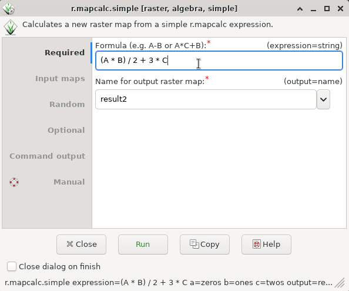

DESCRIPTION
r.mapcalc.simple provides a wrapper to r.mapcalc.
Up to 6 maps can be combined using simple expressions.
The general syntax for the expression follows
r.mapcalc expression format,
for example, A + B or exp(A + B) are valid.
The variables A, B, ..., F represent raster maps which are provided
as options a, b, ..., f.
The result name, i.e. the output raster map, is provided using the
option output and, unlike r.mapcalc it is not part
of the expression.
This module is meant for convenience (for users and programmers) while
the r.mapcalc module is a better choice for more complex
expressions and advanced usage.
NOTES
Differences to r.mapcalc module:
- The input raster map names and the output map raster name are
separate from the expression (formula) which uses generic
variable names (A, B, C, ...).
- The output raster name is not included in the expression.
- The expression is expected to be a single short one liner
without the function eval().
Differences to r.mapcalc.simple module in GRASS GIS 5 and 6:
- The primary purpose is not being a GUI front end to
r.mapcalc, but a wrapper which allows easy building of
interfaces to r.mapcalc (including GUIs).
- Whitespace (most notably spaces) are allowed
(in the same way as for r.mapcalc).
- The variable names are case-insensitive to allow the original
uppercase as well as lowercase as in option names
(unless the -c flag is used).
- Option names for each map are just one letter (not amap, etc.).
- Output option name is output as for other modules
(not outfile).
- Raster map names can be optionally quoted (the -q flag).
- There is no expert mode
(which was just running r.mapcalc).
- The expression option is first, so it is possible to
omit its name in the command line
(just like with r.mapcalc).
- Overwriting of outputs is done in the same way as with other
modules, so there is no flag to not overwrite outputs.
EXAMPLES
Basic examples
r.mapcalc.simple expression="0" output=zeros
r.mapcalc.simple expression="1" output=ones
r.mapcalc.simple expression="2" output=twos
r.mapcalc.simple expression="A + B + C" a=zeros b=ones c=twos output=result1
r.mapcalc.simple expression="(A * B) / 2 + 3 * C" a=zeros b=ones c=twos output=result2

Figure: r.mapcalc.simple graphical user interface
Example expressions
Addition:
No spaces around operators are not recommended for readability,
but allowed in the expression:
More complex expression with a function:
SEE ALSO
r.mapcalc,
r3.mapcalc,
t.rast.mapcalc,
g.region
AUTHORS
Vaclav Petras, NCSU GeoForAll Lab
Michael Barton, Arizona State University (updated to GRASS 5.7)
R. Brunzema (original 5.0 Bash version)